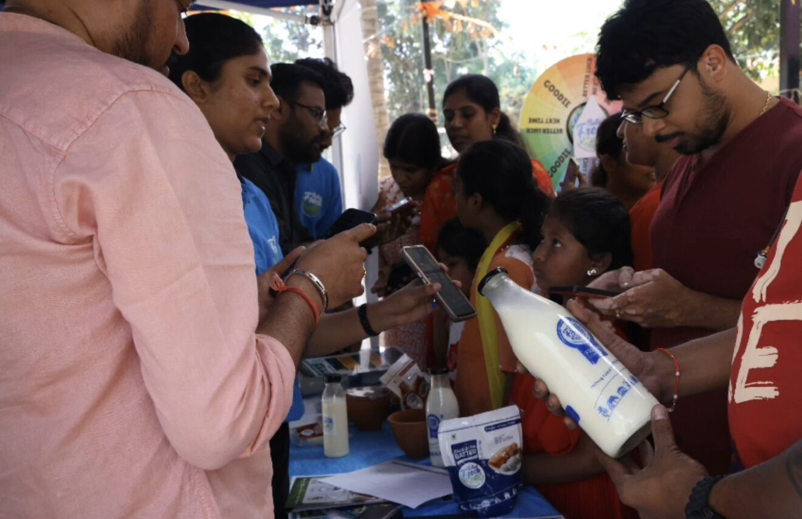
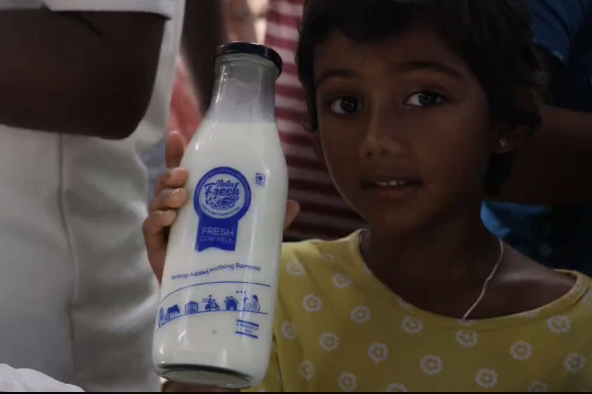
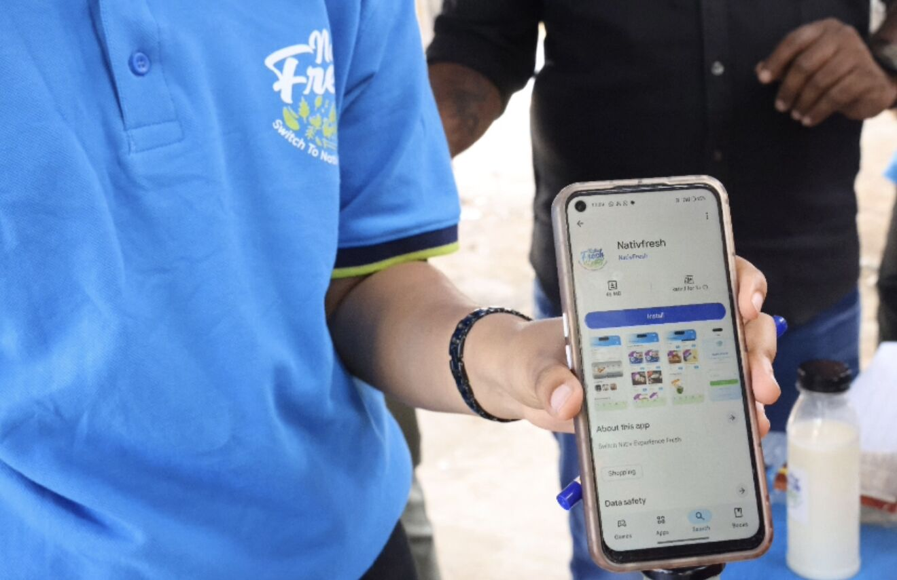
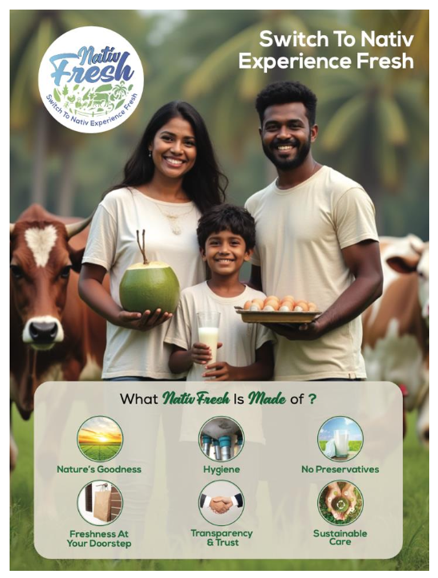
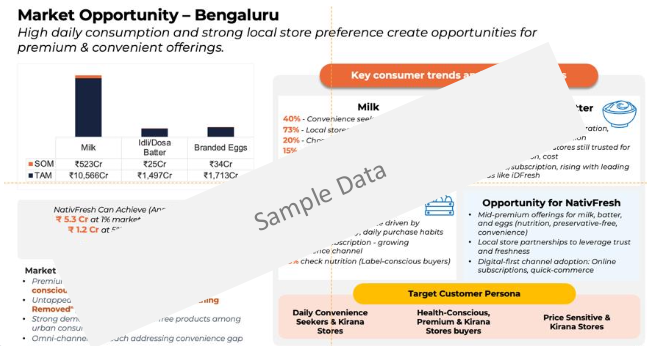
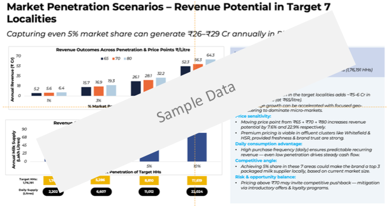

Data-Led GTM for a Fresh Foods CPG Brand in Bengaluru
NativFresh had strong product quality and local sourcing credentials. What they lacked was a validated market map. Before committing launch spend, they needed to know which micro-markets, which channels, and which consumers would drive early traction.
The Situation
Good product. No map. Entering a competitive CPG market without data is how brands fail fast.
NativFresh, a Bengaluru-based fresh foods brand, had strong product quality and meaningful local sourcing credentials – but no market research, unclear consumer segments, and untested pricing. They were preparing to launch into a competitive CPG landscape without a validated roadmap.
The challenge was not whether the product was good. It was whether the right consumers in the right micro-markets could be reached effectively, at a price that worked commercially, through channels that fit their purchase behaviour. GreyRadius was engaged to answer those questions before capital was committed to launch.
GreyRadius deployed the MCCI Framework – Market, Customer, Competitive, and Intelligence – across seven Bengaluru micro-markets, building a consumer-validated GTM strategy from the ground up.
Engagement at a glance
Client
NativFresh – Bengaluru fresh foods brand
Service
GTM Execution-as-a-Service · Opportunity Assessment
Research scope
7 Bengaluru micro-markets; 400+ consumer touchpoints
Framework
MCCI – Market, Customer, Competitive, Intelligence
The MCCI Framework: Market, Customer, Competitive, and Intelligence – across 7 micro-markets.
Market intelligence
Assessed demand dynamics, channel structure, and category growth patterns across 7 Bengaluru micro-markets – from residential zones to premium retail corridors. Each micro-market was scored for fresh food category maturity, price sensitivity, and competitive density. This prevented the common mistake of treating Bengaluru as a single homogeneous market.
Customer intelligence
Primary research with 400+ consumers across NativFresh's target segments. Research mapped purchase occasions, quality signals, price thresholds, origin story resonance, and channel preference by consumer archetype. This produced validated consumer profiles – not assumptions – as the basis for positioning and channel strategy.
Competitive intelligence
Analysed the competitive set – established fresh food brands, premium organic players, local farm-to-table operators, and quick commerce platforms – across positioning, pricing, channel coverage, and messaging. Identified the whitespace where NativFresh could lead on local sourcing credibility without directly competing with larger marketing budgets.
Integrated GTM blueprint
Synthesised all research into a complete CPG GTM strategy: priority micro-markets for initial launch, channel selection and sequencing, pricing architecture by segment, packaging and messaging aligned to consumer findings, and an 18-month expansion roadmap with investment triggers and milestone checkpoints.
"We had a strong product. What we didn't have was a validated market map. GreyRadius gave us one – consumer-validated, channel-specific, and ready to execute."
Consumer-validated GTM. 18-month expansion roadmap. Launch without guesswork.
Research depth
400+ consumer touchpoints
Primary research across 7 micro-markets
Markets
7 micro-markets scored
Each scored for demand, pricing tolerance, and channel fit
Roadmap
18-month expansion plan
With investment triggers and milestone checkpoints
Framework
MCCI validated blueprint
Every decision grounded in primary research
All 7 Bengaluru micro-markets scored across category maturity, price sensitivity, competitive density, and channel availability – with priority ranking for launch sequencing.
Validated consumer archetypes with purchase occasion maps, quality signal hierarchies, price thresholds, and channel preference by segment – built from 400+ direct touchpoints.
Channel selection and sequencing with pricing architecture by segment and micro-market – aligned to consumer research and designed to protect margins in each channel.
Phased launch and expansion plan with investment triggers, milestone checkpoints, and go/no-go criteria at each stage of the Bengaluru and beyond-Bengaluru rollout.
From the engagement






The consumer research across 7 micro-markets was the most important thing we did before launch. We went in knowing our priority zones, our price thresholds, and our channel sequence. No guesswork.
"Fresh food brands in Bengaluru often try to launch everywhere simultaneously. The research consistently shows that micro-market sequencing – starting with 2–3 zones where category maturity, pricing tolerance, and channel fit align – delivers 3× faster traction than broad-market launch."
Launching a consumer brand and need a data-led GTM?
We've helped CPG founders across India and GCC validate their market before committing to launch spend. Talk to us.